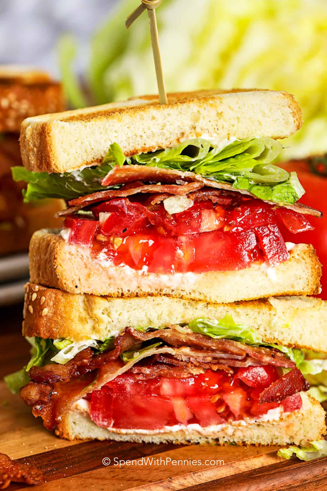

Bacon, Lettuce, Tomato Sandwich (BLT)
This wonderful sandwich is easy to make and something that everyone can enjoy. It is the perfect meal anytime of the year
and is very simple to make.
Ingredients
- Bread of your choosing, I prefer to use sourdough
- 1 Tomato of your choosing
- Romaine or Iceberg Lettuce, really any lettuce of your choice
- Bacon of your choosing, I prefer the kirkland brand
- Mayonaise
- Mustard
- Salt and Pepper
Instructions
- Turn stove top on to medium high heat and place skillet, put bacon slices into pan and cook until golden and crispy.
(8-10 Mintutes) You can cook the bacon to your preferred doneness
however I feel like the crispy bacon works better on the sandwich.
- Wash Tomato and cut into 1/4 inch slices
- Wash and Chop Lettuce to prefered liking
- Prepare your bread and spread mayo and mustard
- Assemble sandwich with toppings and serve!